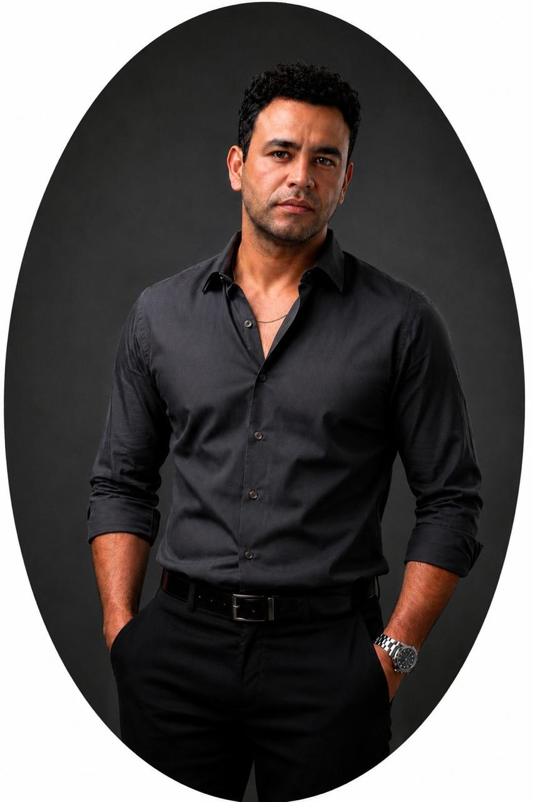

TERRITORIO
JOSÉ FRANCISCO ROMERO DÍAZ
Ideas que
mueven
el territorio.
Una práctica entre infraestructura, energía y paisaje para convertir
problemas complejos en decisiones claras.
TRAYECTORIA ↘

INGENIERO · DOCENTE · INVESTIGADOR